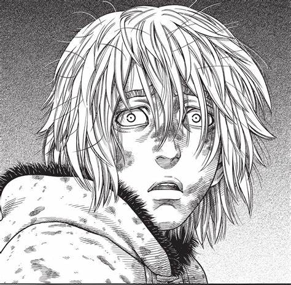

Publicado el 5 de marzo de 2023 por Gadi
Vinland Saga es una obra que a través de su trama y personajes, aborda una serie de temas complejos y profundos. Uno de los mensajes principales de la obra es la importancia del perdón y la reconciliación como elementos clave para la construcción de una sociedad más justa y pacífica. A lo largo de la obra, los personajes se ven envueltos en una serie de conflictos y batallas violentas, y cada uno tiene sus propios motivos y objetivos. En el centro de la trama se encuentra Thorfinn, un joven vikingo que busca venganza por la muerte de su padre a manos de Askeladd, el líder de un grupo de mercenarios. Al principio vemos como Thorfinn está impulsado por el odio y la sed de venganza. Está dispuesto a hacer cualquier cosa para lograr su objetivo, incluso si eso significa poner en peligro su propia vida y la de otros. Sin embargo, a medida que la historia avanza, Thorfinn comienza a cuestionar la justicia de su causa y se da cuenta de que la venganza no le traerá la paz que busca. En este sentido, la historia de Thorfinn es una metáfora de la búsqueda humana de la felicidad y la realización personal. Muchas veces, nos encontramos impulsados por el deseo de alcanzar algo o de vengarnos de alguien que nos ha hecho daño. Sin embargo, a menudo descubrimos que esa búsqueda nos lleva a un callejón sin salida y que, en última instancia, no nos trae la felicidad que buscábamos. En este contexto, la idea del perdón y la reconciliación adquiere una importancia crucial. A través de la historia de Thorfinn, se nos muestra que la venganza y el odio solo conducen a más venganza y odio, y que la única forma de romper ese ciclo es a través del perdón y la reconciliación. En otras palabras, la obra nos invita a dejar atrás el pasado y a mirar hacia el futuro con una perspectiva más constructiva y esperanzadora. Además, Vinland Saga también aborda la idea de que todos somos seres humanos con deseos, miedos, necesidades y aspiraciones, y que, en última instancia, todos tenemos algo en común. En un mundo cada vez más polarizado y dividido, esta idea adquiere una relevancia especial. La obra nos invita a mirar más allá de las diferencias y a reconocer la humanidad que todos compartimos, como una forma de construir un futuro más justo y equitativo. En conclusión, la obra Vinland Saga es una invitación a la reflexión sobre los valores fundamentales que nos definen como seres humanos. A través de su trama y personajes, la obra nos muestra la importancia del perdón y la reconciliación como elementos clave para la construcción de una sociedad más justa y pacífica. Asimismo, la obra nos invita a reconocer la humanidad que todos compartimos, como una forma de superar las diferencias y construir puentes en lugar de muros.
